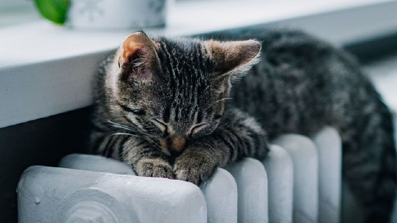

01
Общество и городская среда · событие дня
В 21 доме дату подачи тепла перенесли на 16–19 октября, в остальных устраняют порывы
Списки управляющих компаний направили в прокуратуру и жилинспекцию. Мэр поручил решить проблему за двое суток. Отопление также не включили в 11 вспомогательных зданиях больниц и восьми спортивных школах, решивших сэкономить.…